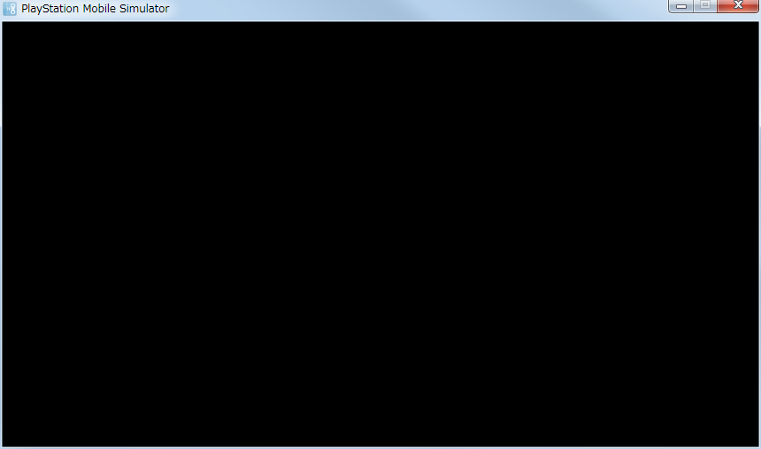

この文書では、新しいプロジェクトを作成するための手順について説明します。
Contents
ここではPSMソリューションを新しく作成する方法を紹介します。
- PSM StudioのWelcomeページで Start a New Solution を選択、もしくは メニューの [File] - [New] - [Solution..]を選択します。
※日本語版では [ファイル] - [新規] - [ソリューション..]になります。

- ダイアログの左側のツリービューから[C#] > [PlayStation(R)Mobile]を選択し、中央のウィンドウのリストから[PlayStation(R)Mobile Application]を選択します。
[PlayStation Mobile Application]では、プログラムを実行するための一通りのファイルを含んだプロジェクトを作成します。
プロジェクト名および作成場所は任意で設定してください。設定が完了したらOKボタンを押します。

- 設定が完了すると、新しいPSMのプロジェクトが作成されます。
実行するには、前章で述べたように、ビルドを行い、F5を押してください。
成功すると以下のような画面が表示されます。
